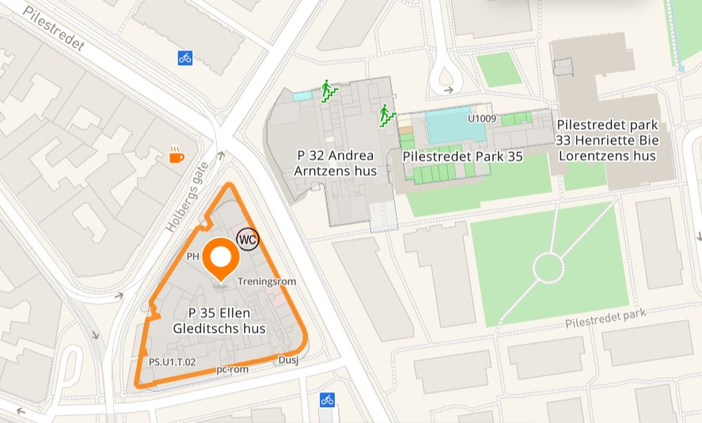

An overview of the building
Pilestredet 35 is the largest building in campus Pilestredet. The building has many facilities that help make student life more joyous and easier. Here is a glimpse of the building's main facilities:
Lecture/Group rooms
They provide a setting for professors to deliver lectures and facilitate discussions with students.
Group rooms are designed for collaborative work among students or small group discussions.
They offer a more intimate setting for teamwork, project discussions, or study groups.
These rooms are typically equipped with audio-visual aids, whiteboards, and other necessary tools to enhance the learning experience.
Gym
Regular exercise has numerous benefits, including stress reduction and improved focus.
The gym has a variety of fitness equipment, such as treadmills, weights, and exercise machines.
Canteen
With an emphasis on affordability, it provides students and faculty with nutritious and satisfying meals in a convenient and accessible location.
The canteen serves not only as a dining area but also as a social space, fostering a sense of community and providing opportunities for relaxation and socializing.
Explore our menu below for a delightful culinary experience.
Location:
Source: Google Maps
Pilestredet 35 is located at Pilestredet 35, 0166 Oslo. It's beside Pilestredet 32 and is close to the beautiful attraction; "Det kongelig slottet."